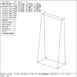
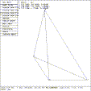

 Figure (menu-arb8-rot): Rotate Face Menu for ARB8
 Figure (menu-arb4-rot): Rotate Face Menu for ARB4
ARB faces may be rotated around any of the vertices comprising that face. First, select the desired face from the ``rotate face'' menu. You will then be asked to select the vertex number around which to rotate the face. The face can be rotated about the three coordinate axes. The knobs (Rotate X, Rotate Y, and Rotate Z) are used for this purpose. For precise rotations, use the p command. If three values are entered after the p, then they are interpreted as angles (absolute) of rotation about the X, Y, Z axes respectively. If only two values are entered, then they are considered as rotation and fallback angles for the normal to that face. The eqn command can also be used here to define the plane equation coefficients of the face being rotated. The rotate face menus for an ARB8 are shown in Figure (menu-arb8-rot) , and the rotate face menus for an ARB4 are shown in Figure (menu-arb4-rot) .
{kind=link}
{kind=link}